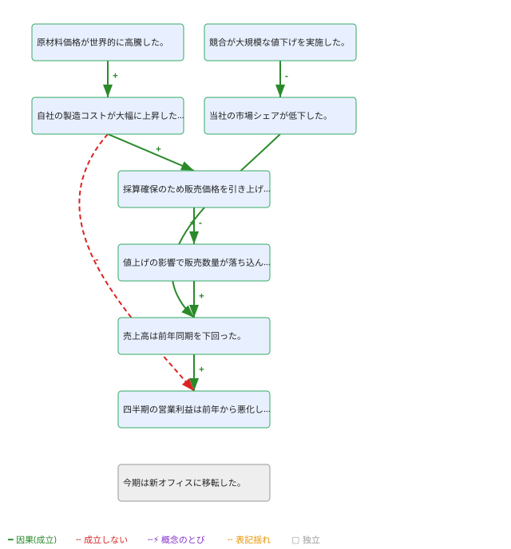
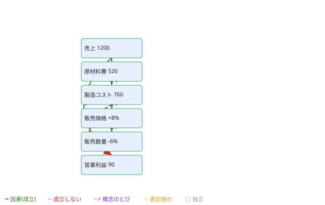
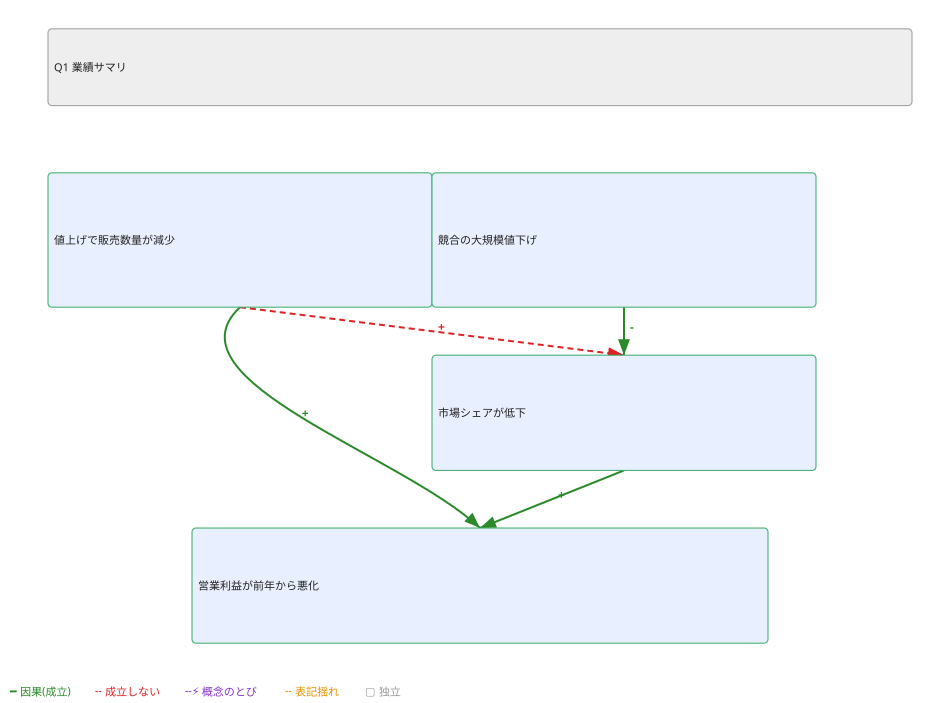
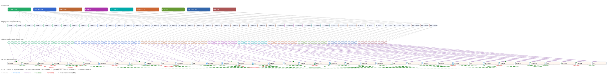

OOXML · TypeScript · local WebGPU
All the XML inside Office,
as one
typed causal graph.
Attach a stable data-id + meta to every pptx / xlsx / docx element, then lift it from
structure → reference → causal — all on-device, no API key.
What it does
Office documents hide implicit causal structure.
A cell B2 = A2*1.1 depends on A2; a slide claims a share decline was
caused by a competitor's price cut. office-causal unifies these into one directed graph and decides
direction with a local model — keeping results reproducible, cheap and auditable.
→ embed (local model) → semantic → causal (direction / polarity) → verify
Typed causal graph
Edges = contains / references / derives-from / mentions / causes. Every causes edge carries evidence + a mechanism and passes hypothesis → supported/refuted.
Stable data-id
Content-addressed ids survive Office re-saves. Embed the whole graph back into the file non-destructively as .ocz.pptx — still valid OOXML, opens normally.
Local & private
Cloud-free edge-LLM: encoder embeddings → local Gemma 4 (WebGPU) adjudicates direction/polarity and runs the adversarial verify. No API key, no upload.
Diagnose & consult
Mechanically find isolated nodes, refuted edges, notation variants and concept jumps; walk causal chains for so-what implications + MECE checks.
Quick start
Three ways in.
1 Try it now — no install
Open the live WebGPU demo in Chrome/Edge, drop a .xlsx/.pptx/.docx, then Run → 🔍 diagnose → 💡 so-what/MECE. Everything runs in the browser.
2 Use it as a library
# configure the scope registry + auth in your project .npmrc
echo "@com-junkawasaki:registry=https://npm.pkg.github.com" >> .npmrc
echo "//npm.pkg.github.com/:_authToken=${GITHUB_TOKEN}" >> .npmrc # PAT with read:packages
npm install @com-junkawasaki/office-causalimport { analyze, embedFile, readDataPart, toTensorNetwork } from "@com-junkawasaki/office-causal";
// fully local, Gemma 4 only (no cloud). Node: device "cpu"; browser: "webgpu".
const graph = await analyze("report.pptx", { llm: { device: "cpu", verify: false } });
await embedFile("report.xlsx", { mode: "part" }); // → report.ocz.xlsx (valid OOXML)
const tn = toTensorNetwork(graph); // → 4-layer tensor network3 Use the CLI
office-causal analyze report.pptx # → CausalGraph (JSON)
office-causal embed report.pptx --analysis # → report.ocz.pptx (graph + analysis)
office-causal diagnose report.ocz.pptx --gemma # isolated / not-holding / notation / concept-jumps
office-causal consult report.ocz.pptx --mece --svg sowhat.svgOutput examples
Diagnosis SVG — layout adapts to the source.
diagnose --svg out.svg renders a self-contained annotated SVG: docx/text uses a topological-DAG layout,
xlsx places cells on the Sheet!A1 grid, pptx reproduces the slide via shape bbox.
green = holds,
red dashed = not-holding; +/- = polarity; gray = isolated.
{kind=link}

{kind=link}

Sheet!A1 cell grid{kind=link}

bbox (slide layout)Tensor network
A whole corpus as one 4-layer tensor network.
Document → Page (slide/sheet/section) → Object (shape/cell/paragraph) → Causal (entity/claim).
Each node is a tensor, each edge a bond (contains/references/mentions/causes; causes carry χ=3 for polarity).
causes and same-concept references link entities across documents, so a single causal cluster spans the corpus.
{kind=link}

causes arcs.
Generate it: npm run build && npm run gen:sample-data → writes the OOXML files, corpus.graph.json, tensor-network.json and this SVG.
Source: examples/sample-data · API: toTensorNetwork(graph) / renderTensorNetworkSvg(tn).
Edge-LLM tiering · cloud-free
Only meaning needs a model — and it's on-device.
| Role | Model class | Job |
|---|---|---|
| ① embedding | encoder (transformers.js) | edge weight · data-id tags · causal candidate shortlisting |
| ② generation | Gemma 4 E2B/E4B (local, WebGPU/WASM/CPU) | adjudicate causal direction / polarity / mechanism · adversarial verify |
Design decisions